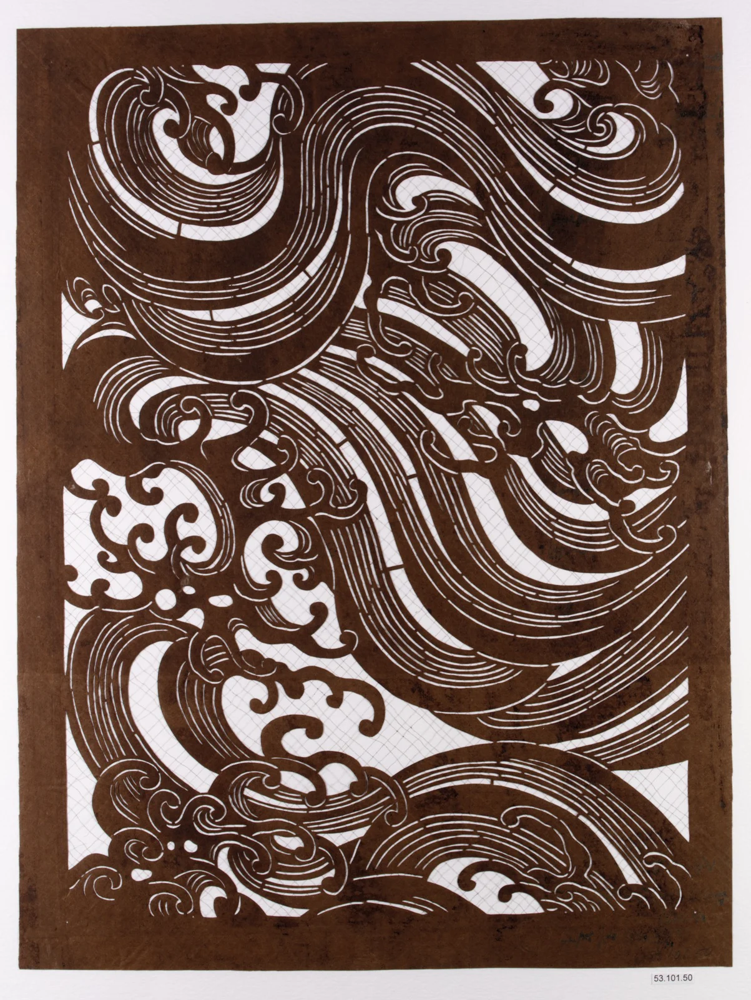

Look closer. The water moves through what the maker removed.
Parallel curves carry the eye. Tight curls interrupt the flow.
Warm brown meets near-white. Value contrast, not complements.
Pale openings reveal the ground. The eye reads them as wave crests.
Suggested practice colours and proportions; not measured from the original.
Paper reinforced with silk. Fine threads cross the openings.
Japan, 19th century. Maker unknown. A craft tradition serving resist dyeing.
First, the weight of moving water. Then, the fragility of paper.
65% ivory + 30% brown + 5% tan. Build hierarchy through value.
One S-curve. Five to seven echoes. Two broad gaps for the eye to rest.
Suggested practice colours and proportions; not measured from the original.
Stencil with Pattern of Waves · Unidentified maker Japan · 19th century · Accession 53.101.50
Rights belong to the original creator where applicable. The collection marks this image Public Domain. Interpretation is independent, not an institutional statement.